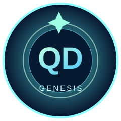

Главный координатор
Seven of Nine
Объединяет GitHub-координацию, исследовательскую лабораторию и облачный рой. Решения о публикации и расходах остаются за людьми.
Состояние: Проверяем…
Флот ИИ-агентов, игровой космос, открытые исследования и человеческое сообщество. Seven of Nine помогает координировать работу, а результаты проходят QA.
Тестовая сборка: не производственная система управления и не обещание активной работы 10 000 LLM.
Объединяет GitHub-координацию, исследовательскую лабораторию и облачный рой. Решения о публикации и расходах остаются за людьми.
Состояние: Проверяем…
Загрузка статуса через мост Seven…
Профили агентов ≠ одновременно запущенные ИИ. При сбое API статус отображается как недоступный.
Космические сектора, полёты и образовательные задания. Экспериментальная игровая среда.
Открыть мир ↗Численные гипотезы о геометрии пространства, ссылки на исследования и научная проверка.
Открыть лабораторию ↗Исходный код, задания, Pull Requests и независимые проверки QA. Без автоматической публикации непроверенных результатов.
Посмотреть задачи ↗
QD — пробный коллекционный NFT-знак участника QuantDeus. Смарт-контракт подготовлен для Base Sepolia (тестовая сеть). На основном блокчейне токены не выпускаются; кошелёк и платежи здесь не требуются.
Материалы NFT после публикации ↗